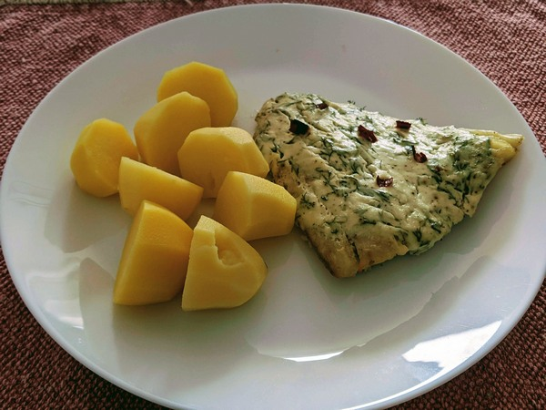

Ryby se u nás na stole objevují pravidelně, ale ráda v tomhle směru zkouším nové a neotřelé variace. Skvělým upgradem je i tento recept z OnaDnes na filé pečené v zakysance - podle mě je úplně geniální pro úpravu ryb, které mají při pečení tendenci se vysušovat, jako treska apod. Neváhejte a vyzkoušejte ;-)
- 600g rybího filé (treska, mořská štika…)
- 1 citron
- sůl, pepř
- 1 lžíce rostlinného oleje
- 1 lžíce másla
- 200g zakysané smetany
- hrst nasekaného čerstvého kopru
- 1 červená chilli paprička
Rybí filé pokapeme vymačkanou šťávou z citronu, osolíme a opepříme. Na pánvi rozehřejeme olej s máslem a rybu zprudka opečeme po obou stranách dozlatova. Pak ho opatrně přendáme do pekáčku vyloženého pečicím papírem. Zakysanou smetanu smícháme s nasekaným koprem, ochutíme solí a pepřem a touto směsí rybu potřeme. Posypeme očištěnou a na kolečka nakrájenou chilli papričkou a vložíme do trouby předehřáté na 180°C. Necháme zapéct asi 10 minut. Přílohu zvolte dle svých preferencí :-)

Komentáře (2)
Komentáře jsou uzavřené.